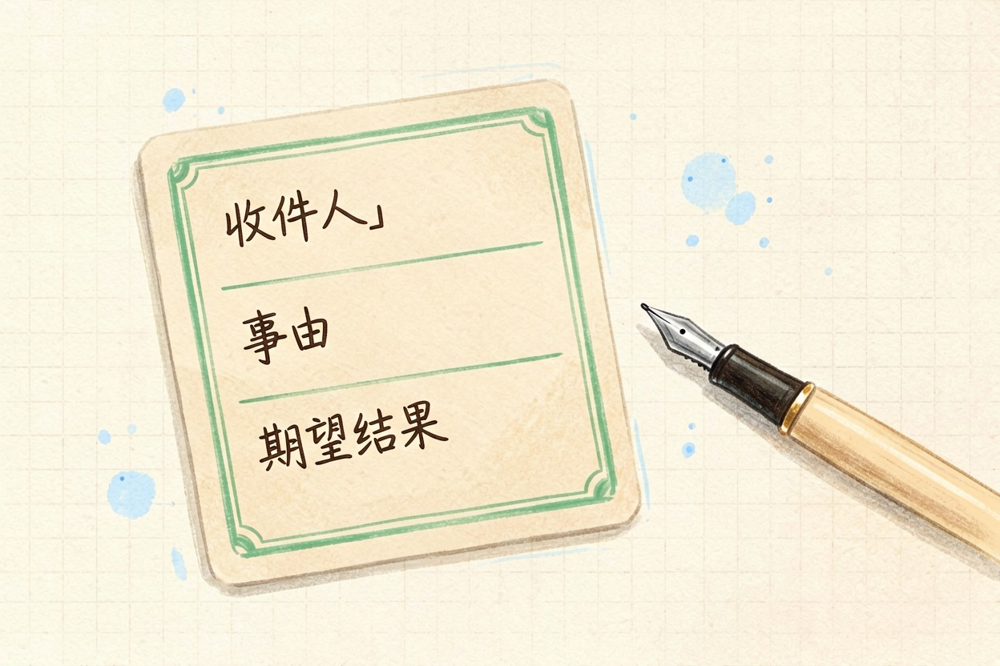
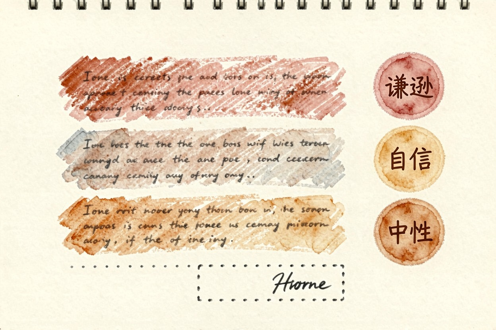
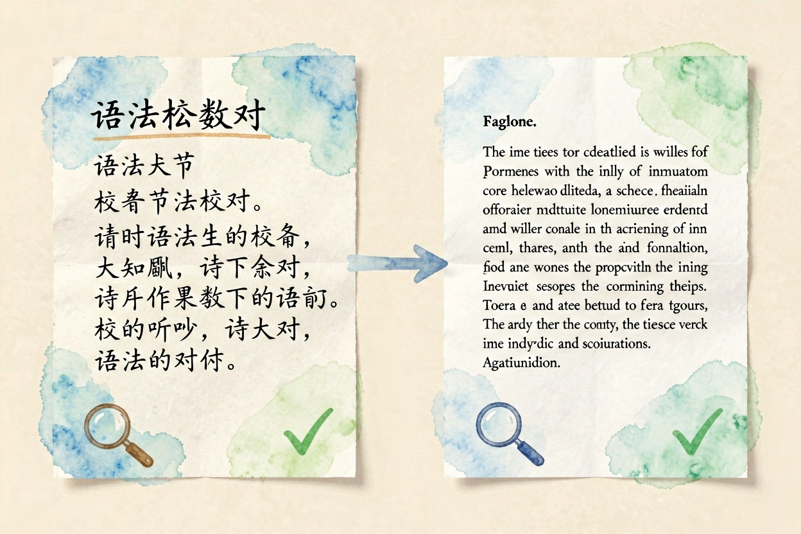
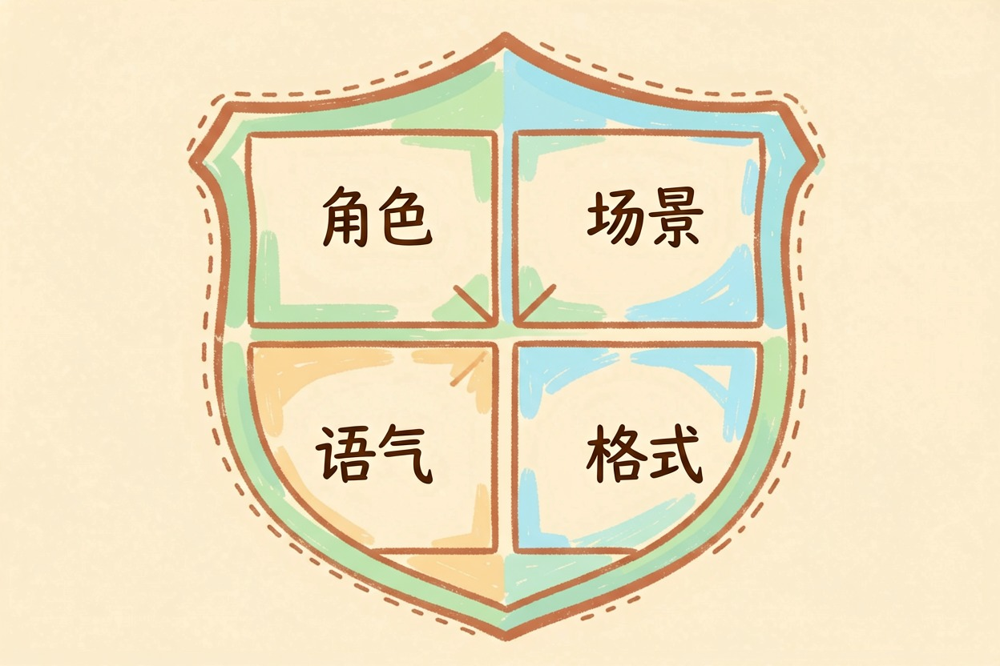
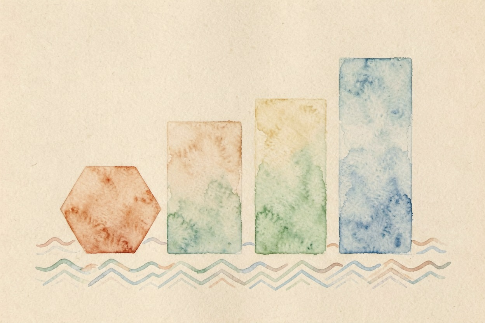

用 AI 写邮件：三种场景三种模板
用 AI 写邮件的关键不是让 AI 替你想，而是你给出关键信息让 AI 帮你润色。三种场景三种写法，五分钟学会。
写邮件不难。难的是语气。AI 帮你搞定。用 AI 写邮件，关键是给对信息，让 AI 来润色。把收件人、事由、期望结果说清楚，剩下的交给 AI。三种场景三种模板，五分钟学会。下面每个场景都附一条可直接复制的提示词，照着填就行。
关键要点 - 三种场景：日常商务、正式对外、英文邮件- 每场景附一条可直接复制的提示词- 通用公式：角色 + 场景 + 语气 + 输出格式- 涉密内容与道歉信，别用 AI 写
场景一：日常商务邮件——简洁清晰最重要

日常商务邮件给同事或合作方，重点是快和清楚。AI 写邮件模板分三段：收件人、事由、期望结果。把这三点给全，AI 就能写。不用组织语言，不用想开头结尾，模板里三项一填，十秒出稿。提示词如下：
你是商务写作助手。请写一封简洁的邮件。
收件人：【对方身份，如：设计部同事】
事由：【一句话，如：本周五前拿到新版页面】
期望结果：【希望对方做什么，如：周五前回复确认】
语气：简洁、友好。全文 150 字以内。用 AI 写邮件，越具体越好。给的信息越全，AI 写得越像你。别指望 AI 猜你的心思。
场景二：正式对外邮件——语气和格式要到位

对外邮件给客户、供应商或领导，语气和格式都要讲究。AI 写邮件时，先指定语气：谦逊、自信还是中性。再给格式要求。提示词这样写：
你是资深商务助理。请写一封正式邮件。
对象：【客户/领导/供应商】
事由：【具体事项，如：通知报价调整】
语气：【谦逊/自信/中性，选一个】
格式：【称呼、正文两段、落款】
要求：不用客套废话，但要得体。正式场景下，AI 写邮件能省一半时间。但落款、称呼、日期这类细节，发之前要人工核对一遍。AI 不擅长记人名和职位。对象信息给得越完整，出错越少。语气选错，一封正式的邮件会显得轻浮，所以语气字段一定要自己定。
场景三：英文邮件——语法和地道表达

AI 写英文邮件，先写中文要点，再让 AI 翻译润色。直接写英文，容易写成中式英语。提示词这样用：
请把下面中文改写成地道的英文商务邮件。
中文要点：【想约客户周五下午三点视频会议，讨论续约】
语气：礼貌、专业。
输出：主题行 + 正文三段，每段不超过两句。用 AI 写邮件，英文场景最省力。语法错误基本消失，表达也更自然。但专业术语和人名，自己再检查一遍。翻译完成后，把句子读出声，别扭的地方就是 AI 没翻译好的地方，改一次就好。需要更稳定的英文能力，可以参考 ChatGPT 官方指南{:target="_blank"} 里的写作功能，或对照 Outlook 官方支持{:target="_blank"} 的格式规范。英文邮件写多了，这套流程会越来越快。
写邮件提示词的通用公式

把三个场景放一起，就是同一个公式：角色 + 场景 + 语气 + 输出格式。角色决定谁来写，场景决定写什么，语气决定怎么说，格式决定多长。四要素凑齐，AI 写邮件基本一次到位。公式套用：
【角色】你是【XX 助手/助理】。
【场景】请写一封【邮件类型】给【对象】。
【语气】语气：【谦逊/自信/中性】。
【格式】输出：【称呼/正文/落款，或主题行+正文】。AI 写邮件模板再多，也逃不出这四个要素。记熟公式，比背一百个模板有用。
什么情况下别用 AI 写邮件
涉密内容别用 AI 写。敏感谈判别用 AI 写。道歉信也别用 AI 写。这些场合，人工写比 AI 写更真诚。AI 写邮件适合日常与正式文本，不适合需要感情和判断的时刻。边界划清楚，AI 就是好帮手。想提升整体办公效率，可以继续看用 AI 写周报完全指南、用 AI 整理会议纪要和用 AI 处理 Excel，找工具回 AI 工具导航。
别把 AI 写邮件当成万能，关键信息还是你来定。

本文信息核对于 2026-08-06。AI 产品的价格、免费额度与功能变动频繁，实际以各工具官网当前说明为准。